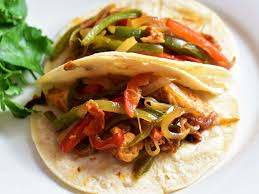

Chicken Fajitas

Recipe Description:
Chicken Fajitas are the easiest, helthiest and less time spendingrecipe you could do in your heavy days! Bare in mind that this recipe has all the macros needed for a great alimentation (such as 25g of protein per serving, loads of vitamin A,B and C, necessary greens, and 40g of carbs!) and it's going to become a game changer in your every day diet, because of how good it is.
Also, this recipe is supported by various nutrition specialists, as they love this great meal too!
Ingridients:
- 250g Chicken
- 2/3 Tortillas
- 1/2 Red and Yellow Peppers
- 1 middle-sized Onion
- Cheese
- 250 ml Tomato Sauce
- Spicies Mix (Special for Fajitas!)
Preparation:
- The first step is to seal the chicken. Prepare a large pan and hit it up at medium heat with some olive oil in it. Once the pan is hot, is time to add the previously stripped chicken breasts. Cook them till a whiteish color.
- Continuing with the recipe, in the pan where you've cooked the chicken, you can cook the vegetables. We reserve the chicken aside and we start cooking the onion already cut in stripes. The vegetables have different cooking times, that's why we cook the onion before the peppers. When the onion is golden, is time to add in the peppers, and cook everything toghether.
- We are almost done with our recipe. Once the vegetables are cooking, we add the seasoning and the chicken. Bare in mind that we have to keep sturming for the aliments to cook evenly. Once everithing is in the stove, we must reduce the intensity and cook slowly the rest.
- Finally, when everything is cooked, we add the tomato sauce, and you just need to bild your fajitas: grab a tortilla, some of the mix of chicken, vegetables and sauce, and some cheese. I would recomend to add in some guacamole too!